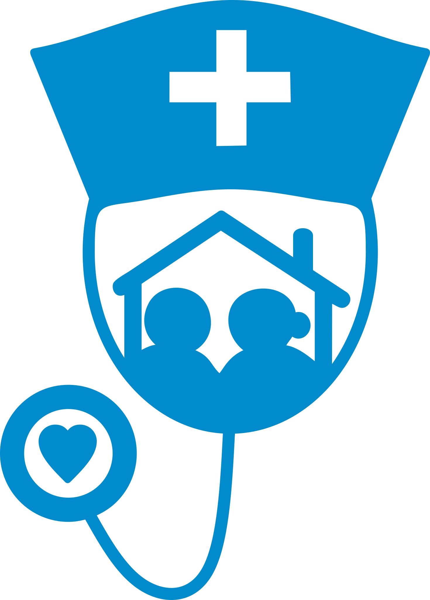
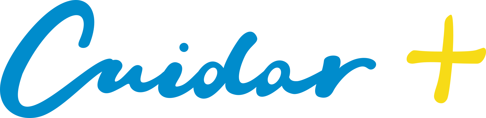

How do you make a new association feel established before it has a history?
MY ROLE
As Secretary of the Board I shape and maintain the website, its content and structure, communication, member journeys and the digital systems around them.
ADAM / COMMUNITY
01
INFORMATION ARCHITECTURE
I didn't want the website to begin and end with the association.
A new association has very little history to show. So instead of building a small institutional site around “who we are”, I organised the public experience around things people could already use: finding teams, finding fields, following events and news, understanding ADAM and, only then, deciding whether to join.
THOUGHT PROCESSGive somebody a reason to return even if they never become a member.
The homepage had to answer several intentions without becoming a menu of links.
01DISCOVER
Equipas + Campos
→
02UNDERSTAND
What ADAM is
→
03JOIN
Membership choices
→
04RETURN
Events + News
I used the homepage as an overview of the whole ecosystem: useful community content comes before the membership pitch, while current activity and news give the association signs of life.
02
COMMUNITY PAGES
A directory can do more than list names.
The community area became a way of making the regional airsoft scene visible. I separated teams and fields because the questions are different: with a team, somebody wants to know location, style and whether they recruit; with a field, they need practical information about where and how they can play.
DESIGN CONSEQUENCEThe public listing and the submission process had to be considered together: useful public information, while private management contacts stay private and submissions are reviewed before publication.
01 · EQUIPASWho can I play with?locationplay styleteam sizerecruitment
02 · CAMPOSWhere can I play?locationfacilitiesrulespractical info
03
ASSOCIA-TE
Membership needed explanation before it needed a form.
There are two membership routes, and ADAM is not itself an APD. That distinction could easily make the page confusing. I structured the page to answer the decision in stages: why join → what changes → whether ANA is relevant → which route fits → what happens next → questions before committing.
Some of the hardest design work was removing uncertainty.
As the site grew, the same questions appeared in different contexts: what ADAM is, what ANA changes, when renewals happen, whether non-members can participate, how photographs are handled and what information becomes public. I treated FAQ, privacy, image policy and membership terms as part of the user experience rather than footer paperwork.
CONTENT PRINCIPLEIf a question can stop someone from trusting or using the association, it deserves a clear answer in the interface.
FAQSOBRE A ADAMSÓCIOSADAM + ANACOMUNIDADEEVENTOS & IMAGENSCONTA & APOIO
NEWS / COMMUNICATION / PHOTOGRAPHY
The site also needed proof that something was actually happening.
I use news, community communication and photography to keep the institutional side connected to actual activity. That matters especially for a young association: the website cannot only make promises; it needs to document movement.
05
ONLY THEN: THE MEMBER SYSTEM
The private area grew out of the public journey.
Once somebody joins, the experience cannot simply stop. That led to approval states, renewals, account management, member history and digital identification. The card and QR are one small part of that system — useful, but not the centre of this case study.
APPLICATION→REVIEW→ACTIVE MEMBER→RENEWALaccount · quota · history · notifications · identification
WHAT THE WORK ACTUALLY IS
ADAM is less about designing one interface and more about deciding how many different pieces should behave as one organisation.
The public pages, directories, membership information, forms, policies, news, photography and private member workflows all answer different needs. My work has been to keep finding the relationship between them: what belongs where, what somebody needs to know at each point, and what has to happen behind the interface for the experience to remain coherent.
Cuidar+ was created for a group of nurses preparing to launch an in-home care company focused on visiting elderly people and couples in their own homes. The identity needed to feel recognisably connected to nursing while remaining warm, direct and easy to understand for families.
01NURSES02IN-HOME VISITS03ELDERLY PEOPLE & COUPLES
01
THE IDEA
Start with who is caring, where the care happens and who it is for.
Those three parts of the brief gave me the visual vocabulary: nursing, the home and people. Instead of choosing a generic medical mark, I combined those cues into one symbol so the service could be understood quickly.

Original symbol
SYMBOL / SÍMBOLO
Nurse's cap + medical cross + stethoscope + house + two people.
02
THE NAME
The name gave the identity a second layer.
The “+” works both as a familiar healthcare sign and as part of the name. In Portuguese, Cuidar+ can be read naturally as “Cuidar Mais”; in English, the idea carries across as “care more” or “more care”. That made the plus useful conceptually as well as visually.

Auxiliary horizontal version
COLOUR SYSTEM
Two colours, two jobs.
Blue and yellow were not arbitrary choices. In the Portuguese context they already carry strong associations with healthcare and nursing. Coimbra's nursing-school identity uses yellow, and contemporary University of Coimbra nursing branding combines yellow with a blue/turquoise tone; blue is also familiar in clinical uniforms. I used that existing visual familiarity rather than inventing a completely unrelated palette.
PROCESS BLUE C#0085CA
PANTONE 108 C#FEDB00
COIMBRANursing education
Yellow is institutionally associated with Coimbra's nursing school; current UC nursing identity material also pairs yellow with blue/turquoise.
CLINICAL CONTEXTUniform familiarity
Blue is a familiar colour in Portuguese clinical clothing, giving the palette an immediate healthcare reading.
SOURCES / FONTES
Universidade de Coimbra · ESEUC identity rules Portuguese hospital uniform references
03 · A FLEXIBLE IDENTITY
One identity, two useful configurations.
I created a preferred vertical version and an auxiliary horizontal version so the identity could adapt to different formats without changing its construction. Minimum-size guidance protects the detail of the symbol at smaller scales.
01 · PREFERREDVertical configuration · 20 mm min.02 · AUXILIARYHorizontal configuration · 20 mm min.
SECONDARY TYPEFACE
Century Gothic
The brand manual does not define a primary typeface. Century Gothic is specified only as the secondary typeface for supporting communication, chosen to convey a modern and organised image.
FROM MARK TO SYSTEM
Consistency came from defining the boundaries.
The brand book records how the identity should behave across colour, scale and different applications. Rather than adding more visual elements, the goal was to make the existing identity repeatable and recognisable.
01
Keep the proportions.
02
Protect legibility at small sizes.
03
Use colour intentionally.
PROMOTIONAL COMMUNICATION
The identity had to speak like the service: with care.
I developed a five-post promotional series around closeness, touch, protection, quality of life and nursing.
Five original promotional pieces were developed as part of the identity system.
WHAT I TAKE FROM IT
A small identity still needs enough structure to survive outside the logo file.
Cuidar+ made me think beyond the initial symbol: how it reduces, how it changes orientation, how colour behaves on real applications and which rules need to be explicit before somebody else uses the identity.
Acrylic on MDF · approx. A5—30 × 30 cm
Painting 2019—2020
Small paintings based on stills selected from South Korean music videos. Each image began with a moment chosen for the emotion it conveyed.
By removing those moments from movement, sound and narrative and translating them into paint, I explored how that emotion could remain—or change—inside a static image. The paintings were made independently; visual sets were organised only afterwards.
PAINTINGS / ORIGINAL SCANS
Selected photography
Photography
PHOTOGRAPHY
Digital sculpture
3D / Objects
3D WORK
About
One practice, several mediums.
I'm Gabriela Ferreira, a multidisciplinary visual designer and artist in Portugal. My background moves through Fine Arts and Multimedia into professional visual production.
I work across identity, web, photography, image-making, painting and 3D, choosing the medium around the work rather than forcing the work into one discipline.